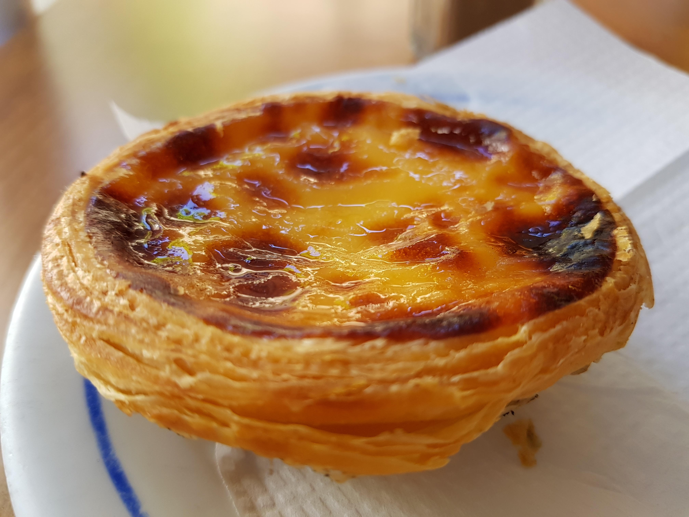

Pasteis de Nata

Description
This recipe for the world-famous pasteis de nata, or Portuguese custard tarts, uses just few basic ingredients but requires numerous steps and a certain amount of finesse. The results are so worth it, though, you'll want to make a double batch. The extra moisture inside the sticky dough, activated by a very hot oven, creates the signature flaky, buttery, crispy crust, which encases a custard subtly scented with lemon, cinnamon, and vanilla.
Ingredients:
- 1 whole egg (large)
- 2 egg yolks (large)
- 115g golden caster sugar
- 2 tbsp cornflour
- 400ml full fat (creamy) milk
- 2 tsp vanilla extract
- 1 sheet ready rolled puff pastry
Steps
- Lightly grease a 12 hole muffin tin and pre-heat oven to 200C/180C fan
- Put egg, yolks, sugar & cornflour in a pan and mix well together then gradually add the milk until mixture is well mixed and smooth.
- Place pan on medium heat and stir constantly until mixture thickens and comes to the boil. Remove pan from heat and stir in vanilla extract.
- Put custard in a glass/ceramic bowl to cool and cover with cling film to prevent skin forming.
- Cust pastry sheet into two pieces and place them on top of each other. Roll the pastry tightly, from the short side, into a log and cut the log into 12 even sized rounds.
- On a lightly floured board, roll each round into a disc (approx. 10cm) and press the pastry discs into the muffin tin.
- Spoon in the cooled custard and bake for 20-25mins until golden on top. Leave to cool in the tin for 5mins then move to a cooling rack to finish cooling although they can be eaten warm.